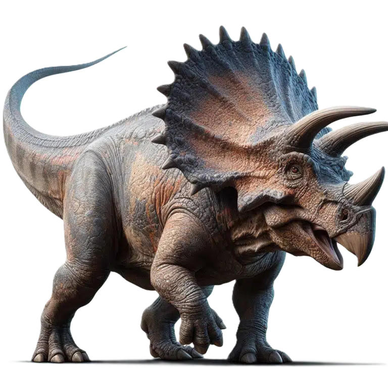

Triceratops
Cara de tres cuernos
Neornithischia/Ceratopsidae
Dinosaurio herbívoro ubicado en el Oeste de América del Norte
Este dinosaurio vivió hace 68 millones de años y fue catalogado en 1887. Era el mayor de los dinosaurios cornudos, uno de los más abundantes de su época y uno de los más reconocidos popularmente. Una de las escenas más recurrentes, sobre todo en los libros infantiles de dinosaurios, lo representa en feroces peleas con Tyrannosaurus Rex.
Altura: 4m
longitud: 9m
Peso: 6000kg
velocidad: 25km/h
periodo: Cretácico superior
Especímenes: 9
